# Forward filtering to get alpha_T for prediction
log_alpha = torch.empty(1, T_hist, K, dtype=torch.float32)
log_alpha[:, 0] = log_pi + emis_log[:, 0]
for t in range(1, T_hist):
x_t = xA_te[:, t, :]
logits = logA0.unsqueeze(0) + (W_A_t.unsqueeze(0) * x_t[:, None, None, :]).sum(-1) # (1,K,K)
log_A = logits - torch.logsumexp(logits, dim=2, keepdim=True)
log_alpha[:, t] = torch.logsumexp(log_alpha[:, t - 1].unsqueeze(2) + log_A, dim=1) + emis_log[:, t]
alpha_T = (log_alpha[:, -1] - torch.logsumexp(log_alpha[:, -1], dim=1, keepdim=True)).exp().cpu().numpy()[0] # (K,)
# Next-year transition and emission
logits_next = np.log(A_base + 1e-30) + np.tensordot(W_A, x_A_next, axes=([2], [0])) # (K,K)
A_next = _softmax_np(logits_next) # (K,K)
p_next = alpha_T @ A_next # (K,)
lam_next = np.exp(beta_em[:, 0] + (beta_em[:, 1:] @ x_em_next)) # (K,)
# Predictive mixture for next year
expected_next = float((p_next * lam_next).sum())
p0 = float((p_next * np.exp(-lam_next)).sum())
prob_donate_next = 1.0 - p0
from scipy.stats import poisson as _po
pmf0k = np.array([(p_next * _po.pmf(k, lam_next)).sum() for k in range(max_k + 1)], dtype=float)
tail = float(max(0.0, 1.0 - pmf0k.sum()))
pmf_dict = {str(k): float(pmf0k[k]) for k in range(max_k + 1)}
pmf_dict[f">={max_k+1}"] = tailBayesian HMM-GLMs
Prediction of the propensity to donate in the blood donors in Trieste
Erik De Luca
Dipartimento di Scienze Economiche, Aziendali, Matematiche e Statistiche
Tommaso Piscitelli
Dipartimento di Informatica, Matematica e Geoscienze
Summary
About the data
Bayesian HMM with GLM on emissions
Viterbi algorithm
Check of the model
Number of latent states
About the Data
What we have
- A longitudinal panel of 9,000+ unique blood donors in Trieste
- Annual counts of donations per donor (0–4 per year), spanning 2009–2023
Where it comes from
- ASUGI transfusion service operational registers
- Fully anonymised data; available covariates: gender (M/F) and year of birth
Objective
- Build a predictive model for future donation propensity and counts
- Discover latent behavioural profiles and common temporal patterns
- Quantify the impact of age, gender, and shocks (e.g., COVID-19) on dynamics
Limitations
- Sparse covariates (only gender and birth year)
- No clinical or socio-economic info
Bayesian HMM with GLM on emissions
Initial-state distribution (\(\pi\)):
\(\pi_{\text{base}}\sim\mathrm{Dirichlet}(\boldsymbol{\alpha}_{\pi})\)
\[ \Pr(z_{n,0}=k\mid x^{\pi}_n)= \operatorname{softmax}_k\!\bigl( \log\pi_{\text{base},k}+W_{\pi,k}\cdot x^{\pi}_n \bigr) \]
\(x^{\pi}_n = (\text{intercept}, \text{birth_year_norm},\;\text{gender_code})\in\mathbb R^{3}\)
Transition dynamics (\(A\))
\(A_{\text{base}}[k,\cdot]\sim\mathrm{Dirichlet}(\boldsymbol{\alpha}_{A_k})\)
\[ \Pr(z_{n,t}=j\mid z_{n,t-1}=k,\;x^{A}_{n,t})= \operatorname{softmax}_j\!\bigl( \log A_{\text{base},kj}+W_{A,kj}\cdot x^{A}_{n,t} \bigr). \]
\(x^{A}_{n,t} = (\text{intercept}, \text{age_binned}, \text{covid_years})\in\mathbb R^{8}\)
Emission (\(\lambda\)):
\[ y_{n,t} \mid z_{n,t}=k \sim \mathrm{Poisson}\Big( \exp\Big(\beta_{em,k} \cdot x^{em}_{n,t} \Big) \Big) \]
\(x^{em}_{n,t} = (\text{intercept}, \text{gender}, \text{age_binned},\;\text{covid_years})\in\mathbb R^{9}\)
Results
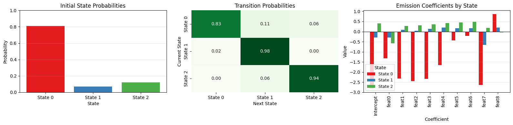
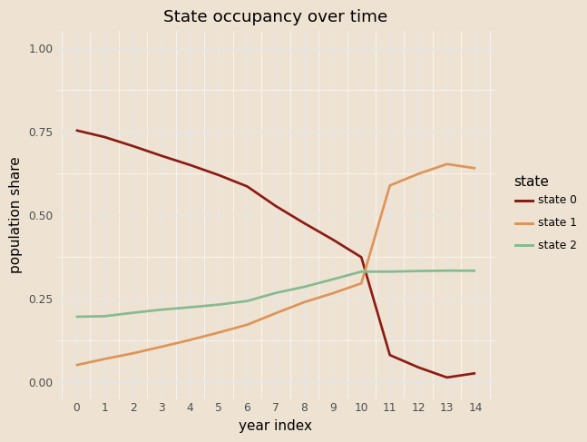
Coefficients on \(\pi\)
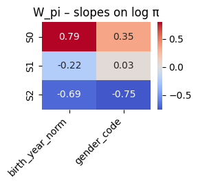

Coefficients on \(A\)

\(\beta\) coefficients

Viterbi Algorithm
Goal: for each donor find the MAP latent path \(z_{0:T}^\ast\).
Dynamic programming
Initial step
\[ \delta_0(k)=\log\hat\pi_k+\log\text{Poisson}(y_0\mid\hat\lambda_k) \]Recursion for \(t=1,\dots,T\)
\[ \delta_t(j)=\max_k\bigl[\delta_{t-1}(k)+\log\hat A_{k j}\bigr] +\log\text{Poisson}(y_t\mid\hat\lambda_j), \] \[ \psi_t(j)=\arg\max_k\bigl[\delta_{t-1}(k)+\log\hat A_{k j}\bigr] \]Back-tracking
Start with \(z_T^\ast=\arg\max_k\delta_T(k)\), then \(z_{t-1}^\ast=\psi_t(z_t^\ast)\) for \(t=T,\dots,1\).
Examples
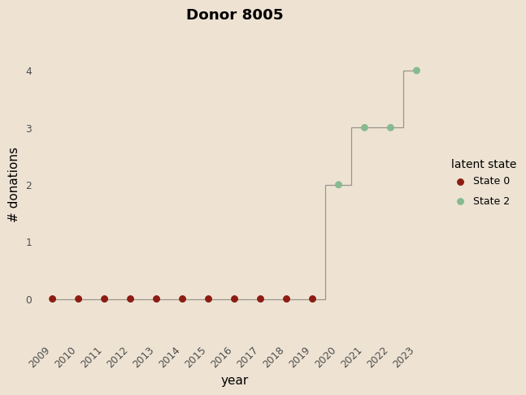
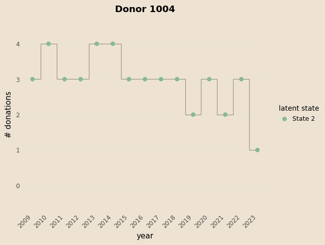
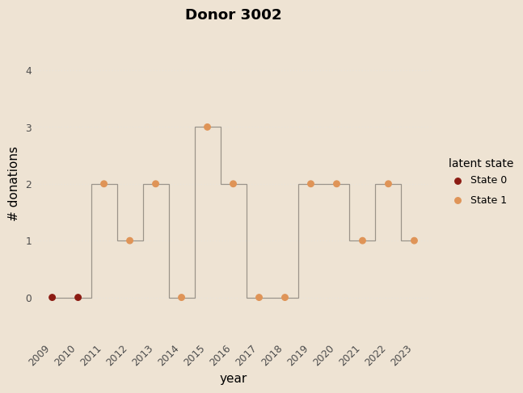
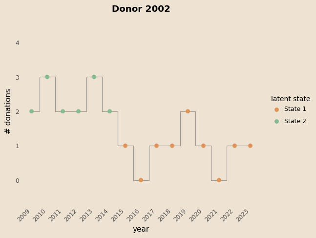
Prediction
- foward algoritm \[ \left\{ \begin{aligned} & \alpha(z_0) = P(x_0 \mid z_0)\, P(z_0) \\ & \alpha(z_T) = P(x_T \mid z_T)\, \sum_{z_{T-1}} P(z_{T} \mid z_{T-1}) \,\alpha(z_{T-1}) \end{aligned} \right. \]
Prediction
# Forward filtering to get alpha_T for prediction
log_alpha = torch.empty(1, T_hist, K, dtype=torch.float32)
log_alpha[:, 0] = log_pi + emis_log[:, 0]
for t in range(1, T_hist):
x_t = xA_te[:, t, :]
logits = logA0.unsqueeze(0) + (W_A_t.unsqueeze(0) * x_t[:, None, None, :]).sum(-1) # (1,K,K)
log_A = logits - torch.logsumexp(logits, dim=2, keepdim=True)
log_alpha[:, t] = torch.logsumexp(log_alpha[:, t - 1].unsqueeze(2) + log_A, dim=1) + emis_log[:, t]
alpha_T = (log_alpha[:, -1] - torch.logsumexp(log_alpha[:, -1], dim=1, keepdim=True)).exp().cpu().numpy()[0] # (K,)
# Next-year transition and emission
logits_next = np.log(A_base + 1e-30) + np.tensordot(W_A, x_A_next, axes=([2], [0])) # (K,K)
A_next = _softmax_np(logits_next) # (K,K)
p_next = alpha_T @ A_next # (K,)
lam_next = np.exp(beta_em[:, 0] + (beta_em[:, 1:] @ x_em_next)) # (K,)
# Predictive mixture for next year
expected_next = float((p_next * lam_next).sum())
p0 = float((p_next * np.exp(-lam_next)).sum())
prob_donate_next = 1.0 - p0
from scipy.stats import poisson as _po
pmf0k = np.array([(p_next * _po.pmf(k, lam_next)).sum() for k in range(max_k + 1)], dtype=float)
tail = float(max(0.0, 1.0 - pmf0k.sum()))
pmf_dict = {str(k): float(pmf0k[k]) for k in range(max_k + 1)}
pmf_dict[f">={max_k+1}"] = tail- Predictive state ditribution \[ P(z_{T+1}) = \alpha(z_T) \times A_{next}(x^{next}_A) \]
Prediction
# Forward filtering to get alpha_T for prediction
log_alpha = torch.empty(1, T_hist, K, dtype=torch.float32)
log_alpha[:, 0] = log_pi + emis_log[:, 0]
for t in range(1, T_hist):
x_t = xA_te[:, t, :]
logits = logA0.unsqueeze(0) + (W_A_t.unsqueeze(0) * x_t[:, None, None, :]).sum(-1) # (1,K,K)
log_A = logits - torch.logsumexp(logits, dim=2, keepdim=True)
log_alpha[:, t] = torch.logsumexp(log_alpha[:, t - 1].unsqueeze(2) + log_A, dim=1) + emis_log[:, t]
alpha_T = (log_alpha[:, -1] - torch.logsumexp(log_alpha[:, -1], dim=1, keepdim=True)).exp().cpu().numpy()[0] # (K,)
# Next-year transition and emission
logits_next = np.log(A_base + 1e-30) + np.tensordot(W_A, x_A_next, axes=([2], [0])) # (K,K)
A_next = _softmax_np(logits_next) # (K,K)
p_next = alpha_T @ A_next # (K,)
lam_next = np.exp((beta_em[:,:] @ x_em_next)) # (K,)
# Predictive mixture for next year
expected_next = float((p_next * lam_next).sum())
p0 = float((p_next * np.exp(-lam_next)).sum())
prob_donate_next = 1.0 - p0
from scipy.stats import poisson as _po
pmf0k = np.array([(p_next * _po.pmf(k, lam_next)).sum() for k in range(max_k + 1)], dtype=float)
tail = float(max(0.0, 1.0 - pmf0k.sum()))
pmf_dict = {str(k): float(pmf0k[k]) for k in range(max_k + 1)}
pmf_dict[f">={max_k+1}"] = tailPredictive number of donation (Mixture of Poisson) \[ \mathbb{E}[y_{T+1}] = \sum_{k=1}^K p_{T+1}(k)\,\lambda_{T+1}(k) \] \[ \Pr(y_{T+1} = k) = \sum_{i=1}^K p_{T+1}(i)\,\text{Poisson}\!\bigl(k \mid \lambda_{T+1}(i)\bigr) \]
Example
| Years | 2009 | 2010 | 2011 | 2012 | 2013 | 2014 | 2015 | 2016 | 2017 | 2018 | 2019 | 2020 | 2021 | 2022 |
|---|---|---|---|---|---|---|---|---|---|---|---|---|---|---|
| Counts | 0 | 0 | 0 | 3 | 4 | 3 | 4 | 3 | 4 | 3 | 2 | 2 | 2 | 3 |
| Viterbi st. | 0 | 0 | 0 | 2 | 2 | 2 | 2 | 2 | 2 | 2 | 2 | 2 | 2 | 2 |
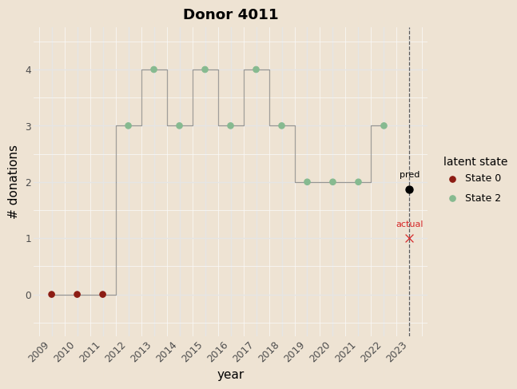
Next-state probabilities: [0.005, 0.125, 0.870]
Expected next donations: 1.871
Prob donate next: 0.824
| # donations | 0 | 1 | 2 | 3 | 4 | >=5 |
|---|---|---|---|---|---|---|
| Probability | 0.175 | 0.275 | 0.252 | 0.164 | 0.082 | 0.049 |
Evaluate performance
- Compare the model with a GLM
\[ y_{n,t} \mid z_{n,t}=k \sim \mathrm{Poisson}\Big( \exp\Big(\beta_{em,k} \cdot x^{em}_{n,t} \Big) \Big) \]
\[ x^{em}_{n,t} = (\text{intercept}, \text{gender}, \text{age_binned},\;\text{covid_years})\in\mathbb R^{9} \]
| Metric | GLM | HMM | Abs diff | Rel diff % |
|---|---|---|---|---|
| pred mean | 0.96 | 0.41 | 0.55 | 135.46% |
| obs mean | 0.91 | 0.91 | 0.00 | 0.00% |
| MSE | 1.0158 | 1.2934 | -0.2777 | -21.47% |
| Accuracy (round) | 28.23% | 40.73% | -12.50pp | -30.69% |
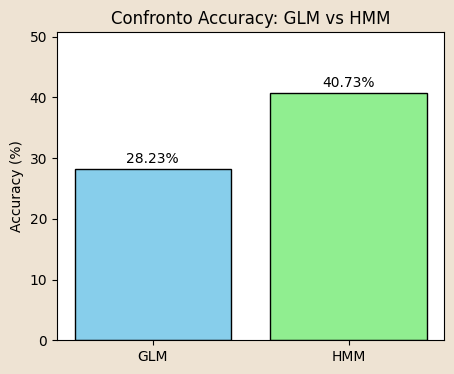
Number of Latent States
Goal: estimate model evidence (Laplace approximation) for differnt values of number of states
\[ \log p(X) \;\approx\; \log p\!\left(X \mid \hat{\theta}_{\text{MAP}}\right) \;+\; \text{Occam factor} \]
\[ \text{Occam factor} \;\approx\; -\tfrac{1}{2} M \, \ln N \]
- Forward algorithm per valutare la likeliood function corrispondente ai parametri appresi
\[ \left\{ \begin{aligned} & \alpha(z_0) \;=\; p(z_0)\, p(x_0 \mid z_0) \\ & \alpha(z_T) \;=\; p(x_T \mid z_T)\; \sum_{z_{n-1}} \alpha(z_{n-1})\, p(z_n \mid z_{n-1}) \quad\text{per } n = 1,\dots, T. \end{aligned} \right. \; ; \quad \sum_{z_{T}} \alpha(z_{T}) = p\!\left(X \mid \hat{\theta}_{\text{MAP}}\right) \]
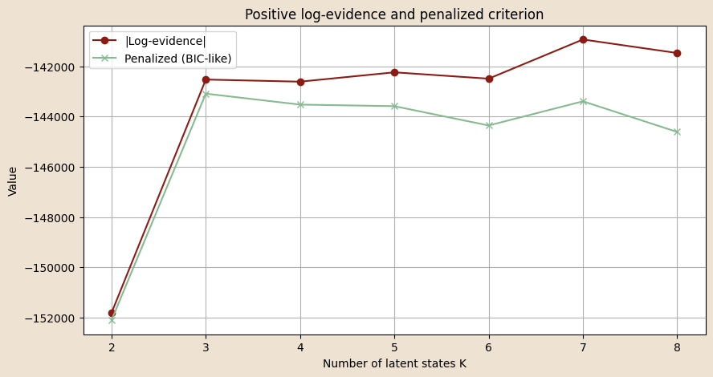
Conclusions
The Bayesian HMM-GLMs permit to get the dynamic and hidden behavioural of the donors
The model is an easy to read and to communicate but at the same time flexible
The latent states are well defined and show a clear donation pattern
Thanks
Backup
Model in Pyro
@config_enumerate
def model(obs, x_pi, x_A, x_em):
N, T = obs.shape
# 1) Priors/parameters for initial and transition distribution
pi_base = pyro.sample("pi_base", dist.Dirichlet(alpha_pi)) # [K]
A_base = pyro.sample("A_base", dist.Dirichlet(alpha_A).to_event(1)) # [K, K]
log_pi_base = pi_base.log()
log_A_base = A_base.log()
# 2) Slope coefficients for initial and transition covariates (learned)
W_pi = pyro.param("W_pi", torch.zeros(K, C_pi)) # [K, C_pi]
W_A = pyro.param("W_A", torch.zeros(K, K, C_A)) # [K, K, C_A]
# 3) State-specific GLM emission coefficients (learned)
beta_em = pyro.param("beta_em", torch.zeros(K, C_em)) # [K, C_em+1] (intercept + 9 dummies)
with pyro.plate("seqs", N):
# Initial hidden state probabilities: depend on x_pi via W_pi
logits0 = log_pi_base + (x_pi @ W_pi.T) # [N, K]
z_prev = pyro.sample("z_0",
dist.Categorical(logits=logits0),
infer={"enumerate": "parallel"})
# Emission at t=0: state-specific GLM on covariates x_em[:, 0, :]
log_mu0 = (x_em[:, 0, :] * beta_em[z_prev, :]).sum(-1)
pyro.sample("y_0", dist.Poisson(log_mu0.exp()), obs=obs[:, 0])
# For t = 1 ... T-1, update state and emit
for t in range(1, T):
x_t = x_A[:, t, :] # [N, C_A]
logitsT = (log_A_base[z_prev] + (W_A[z_prev] * x_t[:, None, :]).sum(-1)) # [N, K]
z_t = pyro.sample(f"z_{t}",
dist.Categorical(logits=logitsT),
infer={"enumerate": "parallel"})
# Emission: state-specific GLM at time t
log_mu_t = (x_em[:, t, :] * beta_em[z_t, :]).sum(-1)
pyro.sample(f"y_{t}", dist.Poisson(log_mu_t.exp()), obs=obs[:, t])
z_prev = z_tGLM on emissions
Priors: the same of the Bayesian HMM.
Slope parameters to learn
\(W_\pi \in \mathbb{R}^{K\times 2}\) (
birth_year_norm,gender_code)\(W_A \in \mathbb{R}^{K\times K \times 8}\) (seven age-bin dummies
ages_norm,covid_years)\(\beta_{em} \in \mathbb{R}^{K \times (1+9)}\) (
intercept,gender_code_tile,ages_norm,covid_years)
Initial-state distribution
\[ \Pr(z_{n,0}=k \mid x^\pi_n) = \mathrm{softmax}_k \big( \log \pi_{\text{base},k} + W_{\pi,k} \cdot x^\pi_n \big) \]
Transition distribution
\[ \Pr(z_{n,t}=j \mid z_{n,t-1}=k, \ x^A_{n,t}) = \mathrm{softmax}_j \big( \log A_{\text{base},kj} + W_{A,kj} \cdot x^A_{n,t} \big) \]
Emission (one Poisson GLM for each latent state)
\[ y_{n,t} \mid z_{n,t}=k \sim \mathrm{Poisson}\Big( \exp\Big( \beta_{em,k,0} + \sum_{m=1}^{9} \beta_{em,k,m} \cdot x^{em}_{n,t,m} \Big) \Big) \]
Guide
Point-mass approximation:
\(q(\pi_{\text{base}})=\delta(\pi_{\text{base}}-\hat\pi)\),
\(q(A_{\text{base}})=\delta(A_{\text{base}}-\hat A)\).
All \(\lambda\), \(W_\pi\), \(W_A\) are deterministic pyro.params and they are optimized during the training. Discrete states \(z_{n,t}\) are enumerated exactly, allowing all possible configurations to be calculated using TraceEnum_ELBO (without stochastic approximation).
def guide(obs, x_pi, x_A, x_em):
pi_q = pyro.param(
"pi_base_map",
torch.tensor([0.6, 0.3, 0.1]),
constraint=dist.constraints.simplex
)
# Each row: simplex for state-to-state transitions
A_init = torch.eye(K) * (K - 1.) + 1.
A_init = A_init / A_init.sum(-1, keepdim=True)
A_q = pyro.param(
"A_base_map",
A_init,
constraint=dist.constraints.simplex
)
pyro.sample("pi_base", dist.Delta(pi_q).to_event(1))
pyro.sample("A_base", dist.Delta(A_q).to_event(2))Train and Test
| Split | Mean LL/seq | MAE | RMSE | Brier(y>0) | NLL |
|---|---|---|---|---|---|
| Test | -13.052 | 0.5068 | 0.7679 | 0.1797 | 0.8832 |
| Train | -13.469 | 0.5183 | 0.7834 | 0.1790 | 0.9158 |
Viterbi Algorithm
@torch.no_grad()
def viterbi_paths_glm(obs, x_pi, x_A, x_em, model_path=None):
"""
Viterbi decoding for HMM with covariate-dependent pi, A,
and Poisson-GLM emissions (intercept already included in covariates).
Parameters
----------
obs : (N, T) long
Observed counts.
x_pi : (N, C_pi) float
Covariates for initial state distribution.
x_A : (N, T, C_A) float
Covariates for transition probabilities.
x_em : (N, T, C_em) float
Covariates for emission GLM (already includes intercept).
model_path : str or Path, optional
Path to saved HMM parameters.
Returns
-------
paths : (N, T) long tensor on CPU
Most likely latent state sequence for each sequence.
"""
# ---------------- load parameters ----------------
W_pi, W_A, pi_base, A_base, beta_em = hmm_glm.load_hmm_params(model_path)
# ---------------- device alignment ----------------
device = obs.device
obs = obs.to(device=device)
x_pi = x_pi.to(device=device, dtype=torch.float32)
x_A = x_A.to(device=device, dtype=torch.float32)
x_em = x_em.to(device=device, dtype=torch.float32)
W_pi = _coerce_to_torch(W_pi, device)
W_A = _coerce_to_torch(W_A, device)
pi_base = _coerce_to_torch(pi_base, device)
A_base = _coerce_to_torch(A_base, device)
beta_em = _coerce_to_torch(beta_em, device)
N, T = obs.shape
K = int(pi_base.shape[0])
# ---------------- emission log-probs ----------------
# eta[n,t,k] = x_em[n,t,:] @ beta_em[k,:]
eta = torch.einsum("ntc,kc->ntk", x_em, beta_em) # (N,T,K)
emis_log = dist.Poisson(rate=eta.exp()).log_prob(obs.unsqueeze(-1)) # (N,T,K)
# ---------------- initial distribution ----------------
log_pi_base = torch.log(pi_base + 1e-30) # (K,)
logits0 = log_pi_base.view(1, K) + x_pi @ W_pi.T # (N,K)
log_pi = log_softmax_logits(logits0, dim=1) # (N,K)
delta = log_pi + emis_log[:, 0] # (N,K)
psi = torch.zeros(N, T, K, dtype=torch.long, device=device)
# ---------------- forward DP ----------------
log_A_base = torch.log(A_base + 1e-30) # (K,K)
for t in range(1, T):
x_t = x_A[:, t, :] # (N,C_A)
slope = (W_A.unsqueeze(0) * x_t[:, None, None, :]).sum(-1) # (N,K,K)
logits = log_A_base.unsqueeze(0) + slope # (N,K,K)
log_A = log_softmax_logits(logits, dim=2) # (N,K,K)
score, idx = (delta.unsqueeze(2) + log_A).max(dim=1) # (N,K)
psi[:, t] = idx
delta = score + emis_log[:, t]
# ---------------- backtracking ----------------
paths = torch.empty(N, T, dtype=torch.long, device=device)
last_state = delta.argmax(dim=1)
paths[:, -1] = last_state
for t in range(T - 1, 0, -1):
last_state = psi[torch.arange(N, device=device), t, last_state]
paths[:, t - 1] = last_state
return paths.cpu()Predicting Next-Year Donations
Obiettivo: Predire la distribuzione di donazioni del prossimo anno per un donatore e decodificare gli stati latenti passati usando un Hidden Markov Model (HMM) con emissioni Poisson dipendenti da covariate (GLM).
Input principali
birth_year,gender- Storico donazioni:
history_years,history_counts - Covariate opzionali per emissioni (
x_em_builder) e transizioni (x_A_builder) - Anni COVID per indicatore:
covid_years
Predicting Next-Year Donations
Passaggi principali
- Preparazione dati e covariate
- Normalizzazione di età e anno di nascita
- Costruzione delle covariate per stati iniziali (
x_pi), transizioni (x_A) ed emissioni (x_em)
- Emissioni Poisson
- Calcolo delle probabilità logaritmiche delle osservazioni dati gli stati (
emis_log) - Dimensione risultante:
(N=1, T, K)
- Calcolo delle probabilità logaritmiche delle osservazioni dati gli stati (
- Inizializzazione stati latenti
- Logits iniziali
log_pi0combinando priorpi_basee covariate iniziali - Normalizzazione con
log_softmax→ probabilità inizialilog_pi
- Logits iniziali
- Decodifica Viterbi
- Ricerca del percorso di stati più probabile (
v_path) - Backpointers
psiper tracciare i percorsi ottimali
- Ricerca del percorso di stati più probabile (
- Forward Filtering
- Calcolo α_t (probabilità marginale di ogni stato al tempo t)
- Normalizzazione → distribuzione sugli stati all’ultimo anno osservato (
alpha_T)
- Predizione prossimo anno
- Transizione verso l’anno successivo usando
A_next - Emissione Poisson predittiva combinata con probabilità sugli stati
- Calcolo:
- Probabilità di ciascuno stato
p_next - Numero atteso di donazioni
expected_next - Probabilità di almeno una donazione
prob_donate_next - PMF fino a
max_kcon tail>= max_k+1
- Probabilità di ciascuno stato
- Transizione verso l’anno successivo usando
Predicting Next-Year Donations
Output
- Sequenza stati passati:
viterbi_states - Distribuzione di probabilità del prossimo anno:
next_state_probs - Predizione numerica:
expected_nextprob_donate_nextpmf_next(dizionario 0..max_k + tail)
Years: [2009, 2010, 2011, 2012, 2013, 2014, 2015, 2016, 2017, 2018, 2019, 2020, 2021, 2022, 2023] Counts: [0, 1, 0, 0, 1, 0, 0, 1, 0, 0, 1, 0, 1, 0, 0] Viterbi states: [0, 0, 0, 0, 0, 0, 0, 0, 0, 0, 2, 2, 2, 2, 2] Next year: 2024 Next-state probabilities: [0.371 0.06 0.569] Expected next: 0.748 Prob donate next: 0.423 PMF next: {'0': 0.5772, '1': 0.2247, '2': 0.1194, '3': 0.0487, '4': 0.0184, '>=5': 0.0117}
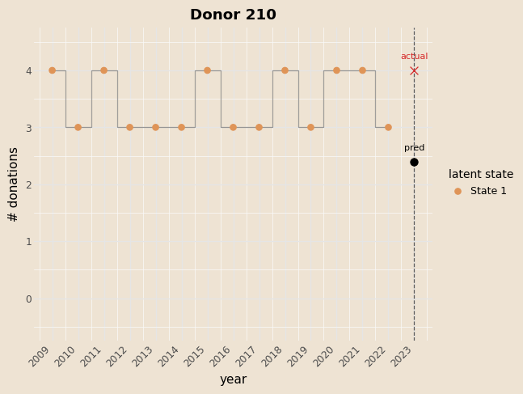
Prediction HMM-GLM
Obiettivo della funzione:
(‘y_pred_hmm’) → numero atteso di donazioni per ciascun individuo nell’anno successivo. \(\textbf{state\_prob}\) → distribuzione sugli stati latenti alla fine dell’anno osservato, usata per calcolare la predizione.
Inizializzazione della distribuzione sugli stati:
\[ \alpha^{(0)}_n = \text{softmax}\Big(\log \pi_{\text{base}} + x^{(n)}_{\pi} W_\pi^\top \Big), \quad n = 1,\dots,N \]
Propagazione in avanti per step futuri: \[ A^{(n)}_t = \text{softmax}_\text{row}\Big( \log A_{\text{base}} + W_A \cdot x^{(n)}_{A,t} \Big), \quad \alpha^{(t+1)}_n = \alpha^{(t)}_n \, A^{(n)}_t \]
Emissione Poisson (GLM per stato): \[ \eta^{(n)}_k = \beta_{k0} + \mathbf{x}^{(n)}_{\text{em},t} \cdot \beta_{k,1:}, \quad \lambda^{(n)}_k = \exp(\eta^{(n)}_k) \]
Predizione del conteggio atteso: \[ \mathbb{E}[y^{(n)}_{t+h}] = \sum_{k=1}^K \alpha^{(t+h)}_{n,k} \, \lambda^{(n)}_k \]
Risultato finale della funzione: \[ \text{y\_expected} = \big(\mathbb{E}[y^{(1)}_{t+h}], \dots, \mathbb{E}[y^{(N)}_{t+h}]\big), \quad \text{state\_dist} = \alpha^{(t+h)}_n \text{ per ogni individuo } n \]
GLM vs HMM-GLM
| Metric | GLM | HMM | Abs diff | Rel diff % |
|---|---|---|---|---|
| pred mean | 0.96 | 0.41 | 0.55 | 135.46% |
| obs mean | 0.91 | 0.91 | 0.00 | 0.00% |
| MSE | 1.0158 | 1.2934 | -0.2777 | -21.47% |
| Accuracy (round) | 28.23% | 40.73% | -12.50pp | -30.69% |
Probabilistic Machine Learning